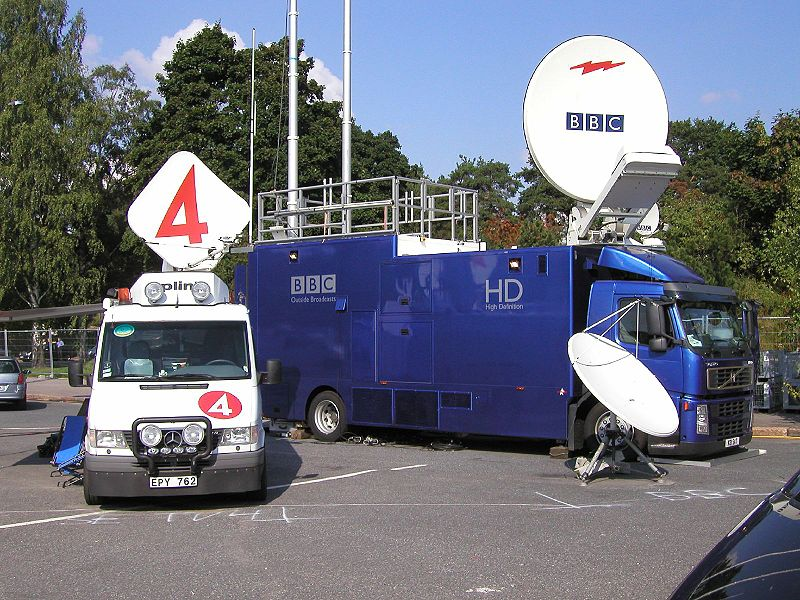
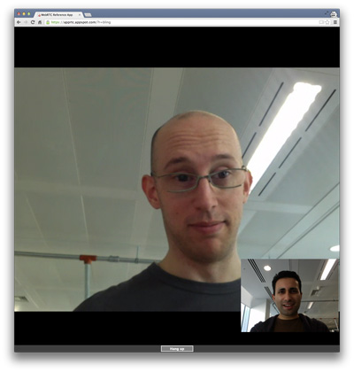
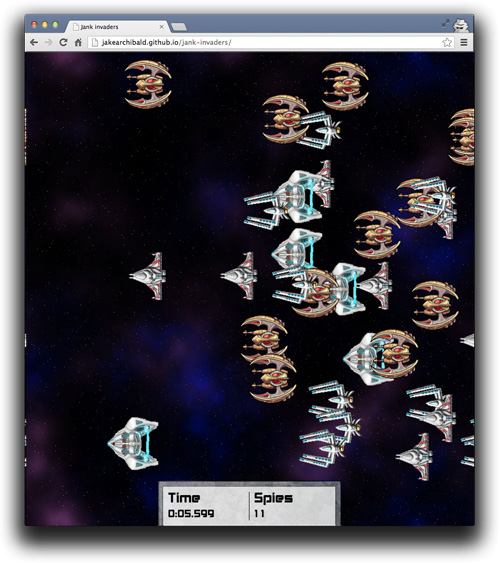

Where is the web?
All these devices have a browser.
Fastest growing iOS and Android markets
What is the web?
Video will be 80 to 90 percent of global consumer traffic by 2017.
WebRTC
Real-time communication built into the browser
WebRTC is a new front in the long war for an open and unencumbered web

Shopping list
WebRTC across platforms
- Chrome and Chrome for Android
- Firefox and Firefox for Android
- Opera
- Native Java and Objective-C bindings
Qt moving to Chromium
- Framework for cross-platform/device native and embedded apps
- Qt WebKit => Qt WebEngine
- Multimedia and new HTML5 features such as WebRTC working out-of the-box
1,000,000,000+
WebRTC endpoints

What do we need for RTC?
Four main tasks
- Acquiring audio and video
- Establishing a connection between peers
- Communicating audio and video
- Communicating arbitrary data
Three main JavaScript APIs
- MediaStreams (aka getUserMedia)
- RTCPeerConnection
- RTCDataChannel
MediaStreams
Acquiring audio and video
MediaStream
- Represents a stream of synchronised media
- Can contain multiple audio and/or video MediaStreamTracks
- Obtain a MediaStream with
navigator.getUserMedia()
gUM
It's pretty simple.
var constraints = {video: true};
function successCallback(stream) {
var video = document.querySelector("video");
video.src = window.URL.createObjectURL(stream);
}
function errorCallback(error) {
console.log("navigator.getUserMedia error: ", error);
}
navigator.getUserMedia(constraints, successCallback, errorCallback);
gUM permissions
- HTTPS only prompts once!
- Chrome apps:
audioCaptureandvideoCapturepermissions - UI settings can be changed afterwards.
- Chrome flag:
--use-fake-ui-for-media-stream
gUM + Canvas
Select resolution
Select mic and camera
Work underway to make this more user-focused
gUM screencapture!
Be sure to enable screen capture support in getUserMedia!
var constraints = {
video: {
mandatory: {
chromeMediaSource: 'screen'
}
}
};
navigator.webkitGetUserMedia(constraints, gotStream);
getUserMedia + Web Audio
// Success callback when requesting audio input stream
function gotStream(stream) {
var audioContext = new webkitAudioContext();
// Create an AudioNode from the stream
var mediaStreamSource = audioContext.createMediaStreamSource(stream);
// Connect it to the destination or any other node for processing!
mediaStreamSource.connect(audioContext.destination);
}
navigator.webkitGetUserMedia( {audio:true}, gotStream);
Make sure to enable Web Audio Input in about:flags!
gUM + Web Audio + WebGL
Media Stream Recording API
- Demo: simpl.info/mediarecorder
- Spec
- Chrome Intent to Implement
- Streams API
Media Stream Image Capture API
Demo- Spec
getFrame()creates anImageDataobject available inonframegrabtakePhoto()creates a Blob available inonphoto
RTCPeerConnection
Audio and video communication between peers
Communicate Media Streams


→
getUserMedia
+
RTCPeerConnection
←
getUserMedia
+
RTCPeerConnection
←
WebRTC architecture

RTCPeerConnection without signaling
The canonical, full-fat video chat app!
WebRTC infrastructure
STUN, TURN and signaling
Peer to peer — but we need servers :^\
Signaling - coordinating communication
- Need to cope with NATs and firewalls: STUN and TURN
- To do this, we exchange 'session description' objects:
- What media formats I support, what I want to send
- Network information for peer-to-peer setup
- Signaling *can* use any messaging mechanism or protocol
JSEP architecture

RTCDataChannel
Bidirectional communication of arbitrary data between peers
Communicate arbitrary data

onreceivemessage = handle(data);
...
var myData = [
{
id: "ship1";
x: 24,
y: 11,
velocity: 7
},
....
]
send(myData);
→
RTCDataChannel
+
RTCPeerConnection
←
RTCDataChannel
+
RTCPeerConnection
←
onreceivemessage = handle(data);
...
var myData = [
{
id: "ship7";
x: 19,
y: 4,
velocity: 18
},
....
]
send(myData);

RTCDataChannel
- Same API as WebSockets
- Ultra-low latency
- Optionally unreliable or reliable:
— Firefox and Chrome 31, Chrome 30 behind a flag - Secure
RTCDataChannel API
var pc = new webkitRTCPeerConnection(servers,
{optional: [{RtpDataChannels: true}]});
pc.ondatachannel = function(event) {
receiveChannel = event.channel;
receiveChannel.onmessage = function(event){
document.querySelector("div#receive").innerHTML = event.data;
};
};
sendChannel = pc.createDataChannel("sendDataChannel", {reliable: false});
document.querySelector("button#send").onclick = function (){
var data = document.querySelector("textarea#send").value;
sendChannel.send(data);
};
RTCDataChannel without signaling
File sharing with RTCDataChannel
Sharefest
Peer to peer file distribution with RTCDataChannel
peerCDN
More Information
- WebRTC and Web Audio resources list: bit.ly/webrtcwebaudio
- Google I/O 2013 WebRTC presentation
- Justin Uberti: Google I/O 2012 presentation video
- Cullen Jennings video: HTML5 WebRTC
- HTML5 Rocks:
- ...and a book: webrtcbook.com
Contact Us
Codecs for the modern Web
VP8 and VP9
Cross platform tools
Chromecast
EME, MSE and DASH
EME
Encrypted Media Extensions
MSE
Media Source Extensions
JavaScript can generate streams for playback
WebVTT, accessibility and timed metadata
Captions and subtitles
Deep linking, deep search
Synchronised metadata
...and finally
Alpha transparency
Tools
APIs
- Navigation Timing
- Resource Timing
- Google Analytics: Behavior > Site Speed
Chrome Dev Tools
- chrome://inspect
- chrome://webrtc-internals
- Screencasting
- Workspaces
Old friends
Best practice
7,000 different types of mobile device access Facebook every day.
Mobile is different!
- Consider quality and frame size
- <video> scripting doesn't work on iOS or Android
- Autoplay doesn't work on iOS or Android
- Preload: 25s on desktop, nothing on mobile
- Enable range requests
- The State of HTML5 video
- Steve Souders' preload test
So what does work on mobile?
- Fallbacks: check out Video for Everybody (no JavaScript!)
- Poster element may be worthwhile
canPlayType()
What about WebRTC?
- Impose limits via constraints or by editing SDP
- Make muting easy and obvious
- On desktop noone notices the permissions UI!
<Thank You!>